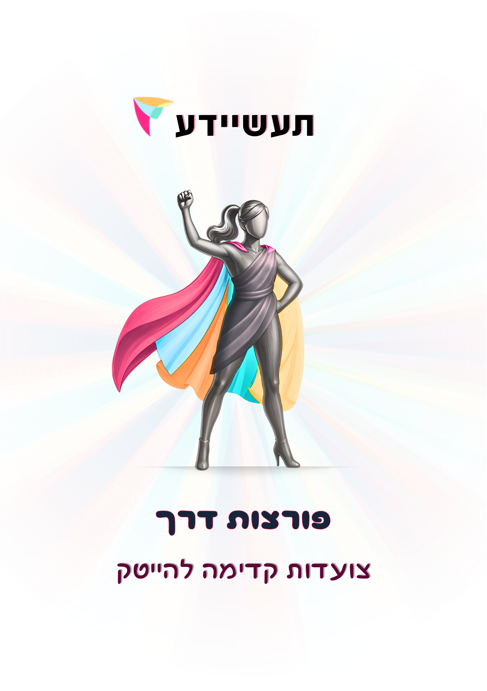

🚀 מסע פורצות דרך 💜
תהליך חשיבה מלא בשלושה שלבים: קל → עמוק → החלטי
שמוביל חשיבה בצורה קלה, עמוקה ואז החלטית
🎯 תחנה 1: בחירת כיוון
למה אנחנו כאן: בוחרים כיוון שמסקרן אותך. לא בוחרים מקצוע, עכשיו.
שלב א מה מושך אותי
סמני עד 3 תחומים שמעניינים אותך:
שלב ב מיקוד קצר
לכל תחום שסימנת – מילה אחת למה:
בחרי את התחומים שבאמת מדברים אלייך – זה המסע שלך!
🔍 תחנה 2: זיהוי בעיה
למה אנחנו כאן: רעיון טוב מתחיל מבעיה אמיתית – לא מפתרון.
הבעיות הכי טובות הן אלה שאת חווה אותן באופן אישי!
✍️ תחנה 3: ניסוח הבעיה
למה אנחנו כאן: בהייטק – בעיה שלא מנוסחת טוב, לא נפתרת טוב.
שלב ג ניסוח סופי (משפט אחד)
השלימי את המשפט:
🌟 ניסוח ברור של הבעיה = חצי הדרך לפתרון!
📚 תחנה 4: חקר והבנה
למה אנחנו כאן: לא ממציאים באוויר. לומדים מה כבר קיים.
תובנות (3 סעיפים קצרים)
כל מה שלמדת מקרב אותך לפתרון טוב יותר!
💡 תחנה 5: רעיון לפתרון (WHAT)
למה אנחנו כאן: רעיון פתרון עקרוני. לא מתכננים מוצר, מנסחים.
שלב ב בעיה-פתרון במשפט אחד
💪 רעיונות טובים מתחילים פשוטים ומתפתחים בהמשך!
⚙️ תחנה 6: תכנון מוצר (HOW)
למה אנחנו כאן: עכשיו לא שואלים מה הרעיון אלא איך הוא עובד בפועל.
שלב ב תרחיש שימוש ברור אחד
שלב ג רצף פעולות (לא מסכים, לא פיצ'רים)
חשבי על החוויה של המשתמש – מה הם רואים, לוחצים, ומקבלים?
📖 תחנה 7: סיפור המיזם (WHY)
למה אנחנו כאן: למה זה משנה. לא מסבירים מה עשינו – מסבירים למה זה חשוב.
שלב ב מבנה סיפור קצר
🌟 הסיפור שלך הוא הלב של הפרויקט!
🎬 תחנה 8: תסריט סרטון
למה אנחנו כאן: 45 שניות שגורמות להבין ולהרגיש.
שלב ב תסריט קצר
שלב ג יצירת פרומפטים – סרטון ותמונה (אוטומטי)
בסיום מילוי התחנה יופיעו שני כפתורים:
הפרומפטים מוכנים להדבקה בכלי יצירה כמו Canva, Runway או AI!
🎉
🎨 תחנה 9: פוסטר מסכם
ממלאים תוכן, מעלים תמונה אחת, ומקבלים פוסטר PDF מוכן. אין בחירת עיצוב – התוכן הוא העיקר.
שלב א תוכן לפוסטר
שלב ג יצוא
גודל: 100×70 ס״מ (Landscape) – מוכן להדפסה ולהצגה
💜 סיימת את המסע! את פורצת דרך אמיתית!
המשך הדרך והצגה
משך כולל: 6 דקות – 2 דקות לכל תלמידה
חשוב: לא כל שדה חייב להיות מושלם. החשיבה חשובה מהדיוק.